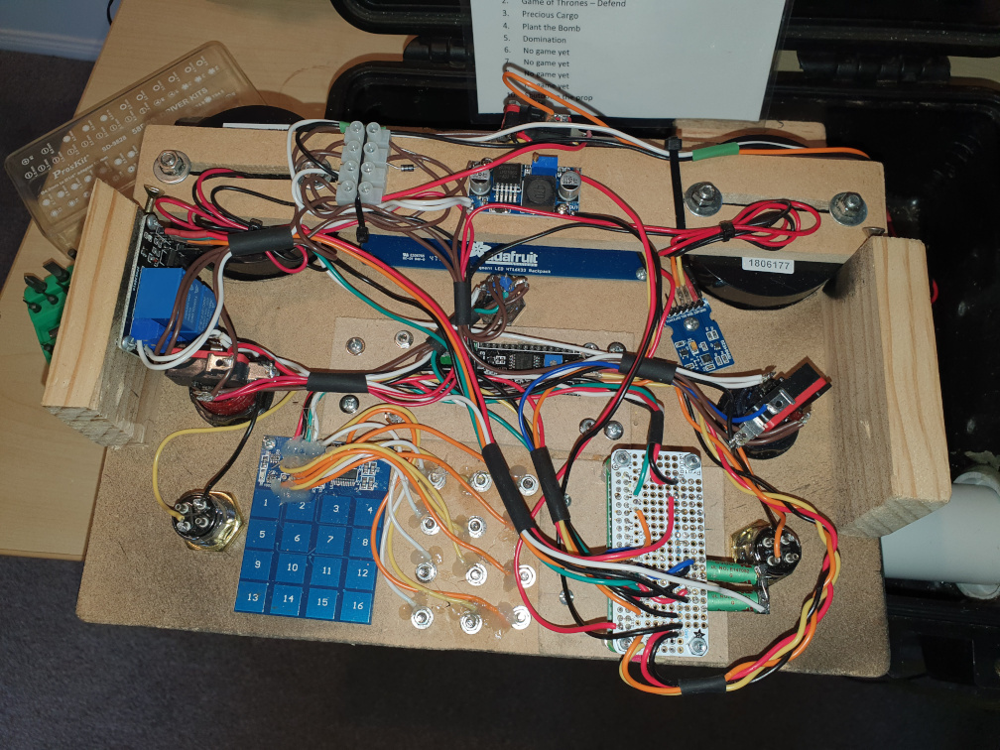
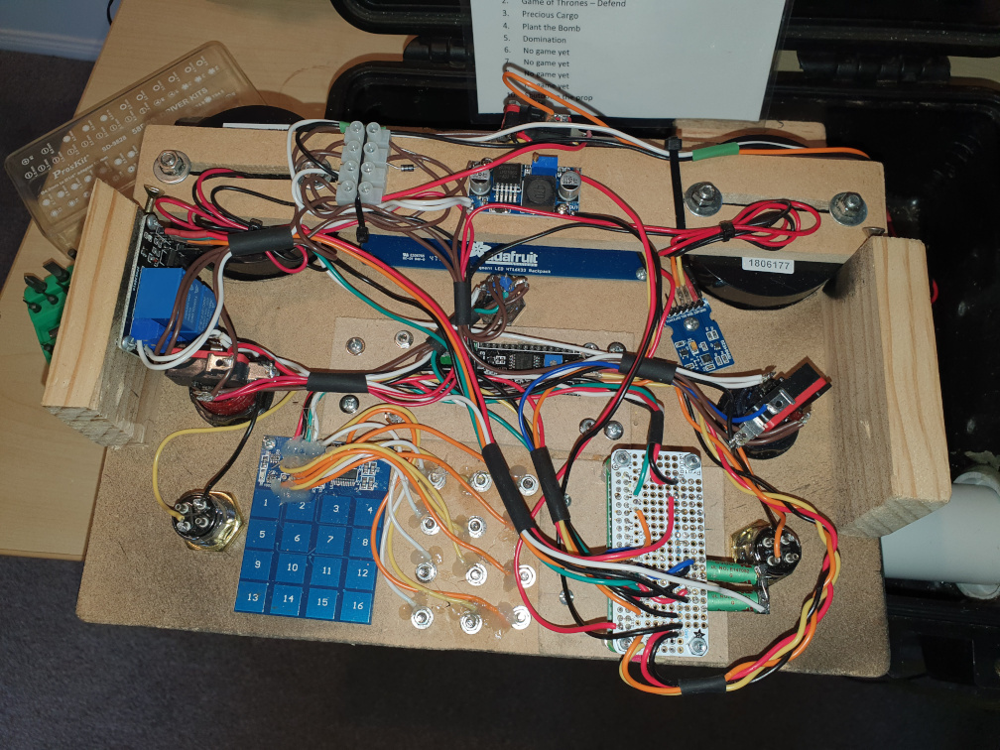

Q-Prop Creations
This ugly page will get better.
Game Objectives
Football
This was the first prop I built, a multi-purpose "bomb" prop with the usual array of buttons, lights, displays, and siren. There are selectable game modes, each game is a Python script running on the RaspberryPi Zero which is at the core of the Football. As you will see from the interior diagram, this is not a well made or repeatable prop.
 

Radio Beacon and Direction Finder
Domination Boxes
Domination Flags
Juggernaut Clock
Juggernaut Noisy Box
Respawn Timer
Medic Timer
Demolitions
Satchel Charge
A nice large demolition charge is a good way to take out a strategic objective.
Sound Grenade
My third prop was this sound grenade, designed to fit the specific limitations of our field where Pyro and percussive grenades were not permitted. These electronic grenades resemble a Mk2 pineapple grenade, although not enough to get you in trouble with law enforcement. When you pull the pin there is a quick arming beep, followed by a four second delay before the longer detonation beeps. Reinsert the pin and the grenade is ready to go again.

Weapon Accessories
Pistol Bayonet
Bayonets an dbayonet charges have fallen out of favour since the invention of the machine gun. So why not put a bayonet on a side arm? Totally ridiculous is one of my favourite ideas. This design uses a Picatinny rail mount and uses the soft rubber blade from a cheap M9 bayonet. The bayonet handle is much shorter, and uncomfortable to hold in your hand. The muzzle loop of the original is now infront of the recoil spring.

HPA for GBB Pistol
M870 to M4 Adapter
The first time I racked the pump on a friend's Breacher, I knew I had to get one of my own. But the breacher has a pitifully small gas reservoir, so I got the Amped IGL for the Breacher. Did I mention that I like ridiculous weapons for scirmish games? I took my M4 Magwell from the GBB pistol adapter and made an M870 adapter. The first one was vertical, below the standard mag well, but Captain Moose wanted to use his breacher prone. The second model clips onto the top Picatinny rail and uses a feed hose to get into the magwell. I also put Picatinny rail on the top, so my breacher also has a reflex shotgun sight.

Respirator Fan

Wrist M4 adapter
Launchers
40mm Mortar
40mm Cannon
M72 LAW
HPA Mortar
Flame Thrower